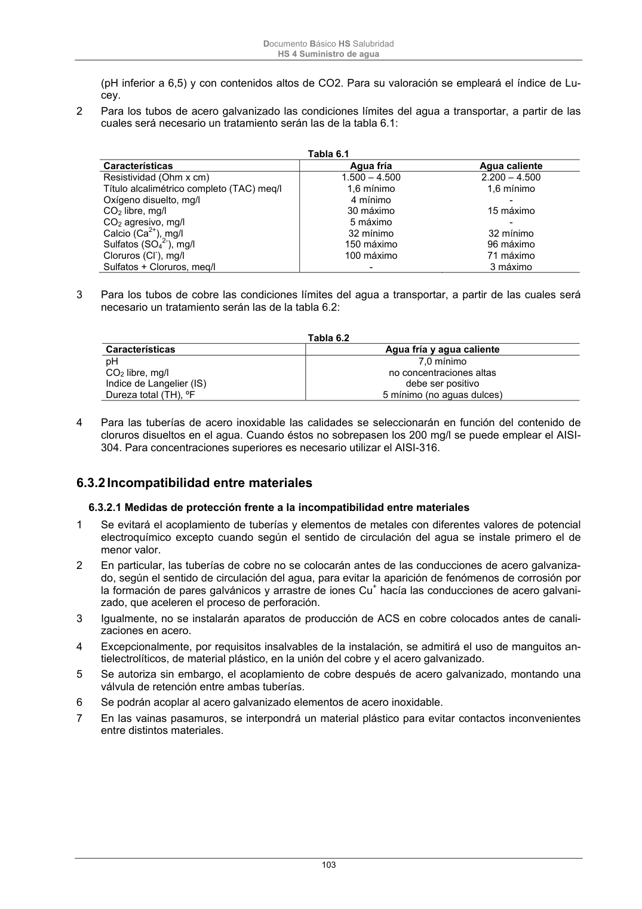

DB-HS · Fragmento de PDF p103 · versión 2022-06-14 · capa oficial
Formatos: JSON compacto · Markdown · PDF fuente
Ámbito del documento · texto del ámbito · documento y tablas
ID técnico a0242 · PDF pág. 103-104 · jerarquía no validada por persona · no es capítulo: sin_linea_de_encabezado · padre: raíz · literal original en el contenido: «6.3.2 Incompatibilidad entre materiales 6.3.2.1 Medidas de protección frente a la incompatibilidad entre materiales»
6.3.2 Incompatibilidad entre materiales 6.3.2.1 Medidas de protección frente a la incompatibilidad entre materiales 6.3.2.1 Medidas de protección frente a la incompatibilidad entre materiales 1 Se evitará el acoplamiento de tuberías y elementos de metales con diferentes valores de potencial electroquímico excepto cuando según el sentido de circulación del agua se instale primero el de menor valor. 2 En particular, las tuberías de cobre no se colocarán antes de las conducciones de acero galvaniza- do, según el sentido de circulación del agua, para evitar la aparición de fenómenos de corrosión por la formación de pares galvánicos y arrastre de iones Cu+ hacía las conducciones de acero galvani- zado, que aceleren el proceso de perforación. 3 Igualmente, no se instalarán aparatos de producción de ACS en cobre colocados antes de canali- zaciones en acero. 4 Excepcionalmente, por requisitos insalvables de la instalación, se admitirá el uso de manguitos an- tielectrolíticos, de material plástico, en la unión del cobre y el acero galvanizado. 5 Se autoriza sin embargo, el acoplamiento de cobre después de acero galvanizado, montando una válvula de retención entre ambas tuberías. 6 Se podrán acoplar al acero galvanizado elementos de acero inoxidable. 7 En las vainas pasamuros, se interpondrá un material plástico para evitar contactos inconvenientes entre distintos materiales. Documento Básico HS Salubridad HS 4 Suministro de agua 104

PDF fuente redistribuible: copia fiel enlazada en esta página (SHA256 verificado).